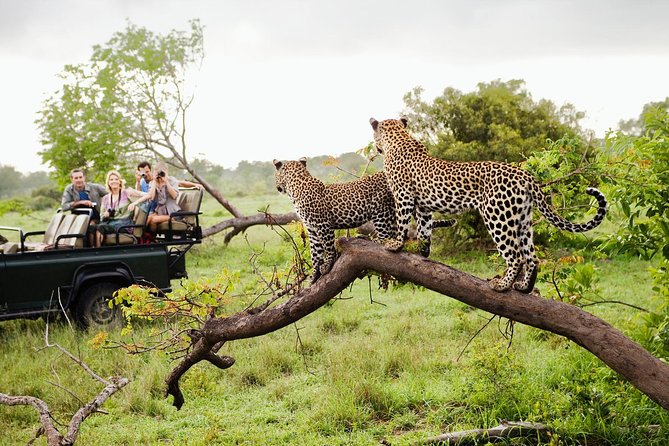

Yala National Park
Yala National Park is known as the best place to spot leopards in Sri Lanka. This is because Yala has the highest density of leopards of anywhere on the island. However, this statistic means that the park often has a high density of tourists too, especially in the peak season from December to March.